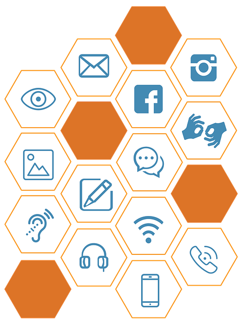

Apuvälineet
 Apuvälineet saavutettavuudessa tarkoittavat välineitä, laitteita ja sovelluksia, jotka auttavat henkilöitä, joilla on erilaisia fyysisiä, sensorisia tai kognitiivisia rajoitteita, käyttämään tietotekniikkaa ja osallistumaan täysipainoisesti yhteiskunnan toimintaan. Seuraavassa on joitakin yleisiä apuvälineitä ja -ratkaisuja, jotka parantavat saavutettavuutta:
Näytönlukijat: Näytönlukijat ovat ohjelmistoja, jotka lukevat verkkosivujen sisällön ääneen näkövammaisille tai niille, joilla on lukemisvaikeuksia. Esimerkkejä näytönlukijoista ovat VoiceOver (iOS) ja JAWS (Windows).
Korkeuskartoittajat: Nämä apuvälineet auttavat sokeita tai vähentää näkökykyä omaavia käyttäjiä navigoimaan verkkosivuilla koskettamalla näyttöä ja saamalla äänipalautetta sivun rakenteesta ja elementeistä.
Käyttöjärjestelmän integroidut saavutettavuusominaisuudet: Useimmat käyttöjärjestelmät tarjoavat sisäänrakennettuja saavutettavuusominaisuuksia, kuten suuren kontrastin tilat, suurentamisen mahdollisuuden ja näppäimistön käyttöä helpottavat toiminnot.
Puheentunnistusohjelmistot: Nämä ohjelmat mahdollistavat käyttäjien hallita tietokonetta tai mobiililaitetta puhumalla, mikä on hyödyllistä niille, joilla on motorisia rajoitteita.
Kuvakaappauksenlukijat: Nämä työkalut tulkkaavat kuvien ja grafiikan sisällön tekstiksi, jotta se voidaan lukea ääneen näkövammaisille tai niille, joilla on vaikeuksia ymmärtää kuvia.
Laajennukset ja lisäosat: Verkkoselaimiin on saatavilla monia laajennuksia ja lisäosia, jotka voivat auttaa käyttäjiä esimerkiksi muokkaamaan sivustojen ulkoasua, lisäämään tekstikokoa tai korostamaan linkkejä.
Saavutettavuusapuvälineiden käyttö edistää digitaalista tasa-arvoa ja mahdollistaa kaikkien käyttäjien osallistumisen verkkoyhteisöihin ja -palveluihin. Lisäksi se voi auttaa yrityksiä ja organisaatioita noudattamaan saavutettavuusstandardeja ja säädöksiä.